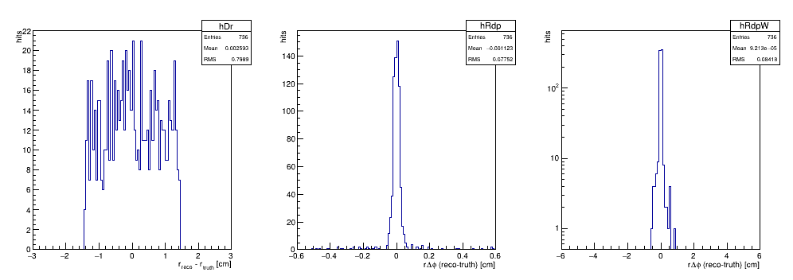

StFstSlowSimMaker — putting MC on the real FST reconstruction chain
FST geometry paths diagram ·
FST outer-sensor gap fix ·
FST Real Data Clusters ·
45° electron check ·
FST residuals
The problem
- MC bypassed both FST reconstruction makers. StFstFastSimMaker goes straight
from GEANT to StFstHit, reimplementing in parallel the part of
StFstHitMaker that turns a measurement into a position.
- So StFstClusterMaker and StFstHitMaker were never exercised in
simulation, and any change to one had to be mirrored by hand into the other
or MC and data silently disagree.
- That duplication is the source of most of the FST geometry trouble this month:
the outer-sensor gap sign has to be fixed in two
places, and the strip-direction / wedge-numbering conventions have to be
re-derived correctly in both. See FST geometry paths diagram
- David pointed out that StFstRawHitMaker already has a simulation mode fed by a
slow simulator, and that embedding is handled there behind a flag:
- But there was no StFstSlowSimMaker
- Copy StIstSlowSimMaker and make StFstSlowSimMaker
New StFstSlowSimMaker
StRoot/StFstSimMaker/StFstSlowSimMaker.{h,cxx} plus a fstSlowSim chain
option copied from istSlowSim. MC now runs:
g2t_fsi_hit -> StFstSlowSimMaker -> "fstRawAdcSimu"
-> StFstRawHitMaker -> StFstClusterMaker -> StFstHitMaker
i.e. the same clustering and hit-position code real data uses. Embedding comes for
free, since it is already implemented in StFstRawHitMaker.
- MC hit source. IST reads mcEvent->istHitCollection(). There is no
StMcFstHit; FST GEANT hits exist only in the g2t table
(GetDataSet("g2t_fsi_hit")).
- The mapping table is 0-based. IST's is 1-based
(mMappingGeomVec[geomIdTemp-1]).
- The seed flag is mandatory. StFstScanRadiusClusterAlgo only creates a
cluster when nToSeedhit > 0. Without setSeedhitflag(1) the chain runs
perfectly cleanly and produces zero clusters.
- The wedge and sensor digits of volume_id are deliberately not used: they are
GEANT numbering, not reco numbering, and confusing the two is a classic FST failure
mode. Wedge is derived from phi via kFstphiStart/kFstphiStop, sensor from
radius. The elecId↔geoId relation is inherited from
Calibrations/fst/fstMapping rather than assumed, so the sensor/phiStrip pairing
(sensor 1 ← phiStrip 0-63, sensor 2 ← 64-127) comes out automatically.
- FST disks are 4, 5, 6 in volume_id, not 1-3 — matching FSTD_4/5/6 in
the TGeo tree. StFstFastSimMaker keeps that convention and indexes its
6-element RMIN/RMAX arrays with 3,4,5.
- sim.C's usual sdt20211016 predates FST installation, so
Geometry/fst/fstOnTpc has no entry, StFstDbMaker::Make() returns
StFATAL, and the chain dies on the first event. Any 2022+ date works.
StFstHitMaker + MC bug
Reconstructed hits came out at radii of ~1 cm — inside the detector's 5 cm inner
edge. The cause was not in the new maker:
- Commit 9e70bfd0a9 (2025-09-05) correctly changed StFstHitMaker to store
true sensor-local cartesian coordinates via MasterToLocal.
- The consumer ~35 lines later was never updated. It still does
global[0] = local[0]*cos(local[1]), correct only under the OLD convention
where setLocalPosition() received the global (r, phi, z).
- Official STAR has neither change, so it stays self-consistent. This fork is
producer-new / consumer-old, so every FST global position this tree computes
has been wrong since September.
- It stayed invisible because nothing in our workflow runs StFstHitMaker:
real-data studies read pre-produced MuDst, and MC used the fast sim, which
bypasses it. Running the real chain on MC is what exposed it.
Closure test
With the consumer made consistent, 200 events, 736 matched hits, comparing each
reconstructed StFstHit against the GEANT hit it came from:
| before | after | expected |
|---|
| dr mean | −0.917 | +0.0026 | 0 |
| dr RMS | 1.105 | 0.799 cm | 0.830 (strip quantization) |
| rΔφ mean | −0.154 | +0.0001 | 0 |
| rΔφ RMS | 2.259 | 0.084 cm | small |
| |rΔφ| > 0.5 cm | 93.6% | 0.8% | — |
dr now matches strip quantization exactly and phi closes to sub-mm. The residual
0.8% tail is truth-matching ambiguity in multi-hit events (the test pairs each
reco hit with the nearest GEANT hit), not geometry. A wedge-numbering, disk or
gap-sign error would put a large fraction out there, not a per-cent tail.
That single test validates, together: wedge numbering, disk assignment, the
sensor/phiStrip pairing, the elecId↔geoId round trip, the outer-sensor gap
sign, and the clustering chain.

dr, rΔφ (fine), rΔφ (wide, log) — reco vs GEANT truth |
The test above is an aggregate over a mixed sample, which is blind to a whole-wedge
mislabel that preserves r and φ. A single isolated electron at φ=45° gives a
discrete check instead — each hit's reconstructed wedge compared against the
wedge implied by its own truth φ:
- reco wedge ≠ truth-φ wedge : 2 / 1724 = 0.12%, both at a wedge boundary
- dominant wedge 2 / 14 / 26 on disks 1 / 2 / 3, as predicted
- φ unbiased to 0.006°; dr RMS 0.796 cm = strip quantization; rΔφ RMS 0.038 cm
- the reco x-y map is the truth 45° ray broken into concentric arcs at the 8 strip
radii — fine in φ, coarse in r, exactly the FST segmentation

truth (top) vs reco (bottom), disks 1-3 —
details |
Status — what is committed and what is not
- New: StFstSlowSimMaker.{h,cxx}, the fstSlowSim BFC option,
script/testFstSlowSim.C. These add a path; they change nothing existing.
- The StFstHitMaker consumer fix — deleting the three overwrite lines
— is a pure bug fix and is up as its own PR against dev.
Correction: an earlier version of this page said dropping the overwrite would
also start applying the DB/survey alignment, and therefore needed sign-off. That was
wrong. The producer applies MasterToLocal and the consumer applies
LocalToMaster using the same matrix, so the round trip is the identity:
the global position returns to exactly its pre-9e70bfd0a9 value and the
alignment cancels either way. It follows that this is not a candidate
explanation for the 12-fold wedge steps.
Limitations — read before trusting a result from this
- One raw hit per GEANT hit, so every cluster is single-strip by construction.
Real data is 74.6% single-strip with mean size 1.39
(measured here), so cluster-size distributions will
not match until a crosstalk/charge-sharing model is added. Fine for geometry
closure; wrong for clustering efficiency or resolution.
- The strip lookup is a partial tautology. It inverts the same
kFstphiStart/kFstrStart formula StFstHitMaker uses forward, so it
cannot validate the strip formula itself — only everything around it. A genuinely
independent lookup has to come from TGeo (find the FTUS node, MasterToLocal,
divide by pitch), the way script/checkFstWedgeGeom.C does. Hooked as
setStripSource(kStripFromTGeo) but not implemented.
- The gap sign is hard-coded to today's code. The inverse tracks
StFstHitMaker.cxx:159,163. If the
gap fix lands there, this must be flipped too or MC
and data disagree by one full kFstStripGapPhi. Having to say that is itself
the argument for the TGeo lookup.
- Charge model is the IST one (3.87 MeV/cm, 300 μm, MIP = 441 ADC) with a Landau
time-bin shape. Not an FST measurement. No noise, no dead channels, no pedestal.
- MC cannot settle geometry-vs-reality. MC is generated from the geometry xml,
so this tests whether reconstruction is consistent with the xml. Whether the xml
matches the real detector (e.g. Flemming's front/back stagger question) needs
metrology or a real-data observable sensitive to it.
Code
Run as:
cons +StFstSimMaker +StBFChain
root4star -l -b -q 'script/testFstSlowSim.C("ele.pt1.5.vz0.run1.fzd", 200)'
{kind=link}